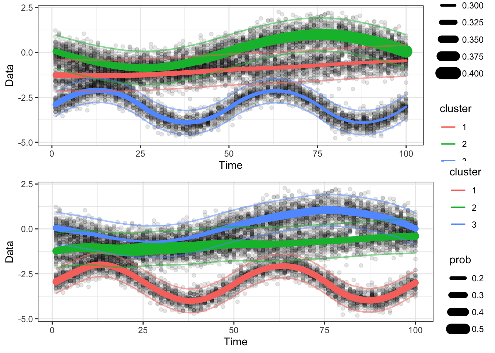

16 Helpers for simulations in the paper
There are two alternatives to consider when estimating mixture models in a series of cytograms.
- The first is to estimate the mixture models to be identical across all time points. This is equivalent to collapsing all cytograms into one and estimating a single Gaussian mixture model on it.
- The second alternative is to estimate separate Gaussian mixture models on each cytogram, then connect the cytograms as much as one can, e.g., by finding similar clusters across time points and combining them.
16.1 Two alternative estimators
We will call the two alternatives underfit_flowmean() and overfit_flowmean().
Here is a plotter function.
#' Pool the entire series of cytograms, fit a flowMeans model, and re-aggregate parameters
#'
#' @param ylist Data.
#' @param numclust Number of clusters.
#' @return List object with flowtrend model estimates using l=lprob=0 and
#' extremely large regularization parameters so that all cytograms are the
#' same across time.
#' @export
underfit_flowmeans <- function(ylist, numclust){
## Pool all data
TT <- length(ylist)
nt <- sapply(ylist, nrow)
ylist_pooled <- do.call(rbind, ylist) %>% as_tibble()
## Fit the model
fmns_pooled <- flowMeans::flowMeans(x = ylist_pooled, NumC = numclust)
labeled_ylist <- data.frame(Y = ylist_pooled$Y,
Cluster = fmns_pooled@Label,
Time = rep(1:TT, times = nt))
## Format nicer output for objective calculations
params <- labeled_ylist %>% group_by(Cluster, Time) %>%
summarise(mu = mean(Y), prob = n(), sigma = var(Y)) %>%
group_by(Time) %>% mutate(prob = prob/sum(prob))
mu <- matrix(nrow = TT, ncol = numclust)
sigma <- matrix(nrow = TT, ncol = numclust)
prob <- matrix(nrow = TT, ncol = numclust)
## Fill in missing times for some clusters
for(tt in 1:TT){
params.tt <- params %>% filter(Time == tt)
for(iclust in 1:numclust){
mu[tt,iclust] <- params.tt$mu[iclust]
sigma[tt,iclust] <- params.tt$sigma[iclust]
prob[tt,iclust] <- params.tt$prob[iclust]
if(is.na(mu[tt,iclust])){
mu[tt,iclust] <- mu[tt-1,iclust]
}
if(is.na(sigma[tt,iclust])){
sigma[tt,iclust] <- sigma[tt-1,iclust]
}
if(is.na(prob[tt,iclust])){
prob[tt,iclust] <- 0
}
}
}
return(list(labeled_ylist = labeled_ylist,
params = params,
mu = mu,
prob = prob,
sigma = sigma,
numclust = numclust))
}Here’s a helper to reorder the clusters of the output created using
underfit_flowmeans() or overfit_flowmeans().
#' Plotter for underfit and overfit flowmeans.
#' @param ylist Data
#' @param obj Output from \code{underfit_flowmeans()}
#' @return ggplot object
#' @export
plot_1d_flowmeans <- function(obj, ylist){
## Make plot of only data
gg = plot_1d(ylist)
my_wrangle <- function(a, values_to){
a %>% as_tibble() %>% setNames(c("1", "2", "3")) %>%
mutate(time=row_number()) %>%
pivot_longer(-time, names_to = "cluster", values_to = values_to)
}
numclust = obj$numclust
mn_long = obj$mu %>% my_wrangle("mean")
prob_long = obj$prob %>% my_wrangle("prob")
## prob_long = probmat %>% pivot_longer(-time, names_to = "cluster", values_to = "prob")
est_long = full_join(mn_long, prob_long, by = c("time","cluster"))
gg = gg + geom_path(aes(x = time, y = mean, linewidth = prob, group = cluster, color = cluster),
data = est_long,
lineend = "round", linejoin="mitre")
## Add the estimated 95% probability regions for data.
## stdev = obj$sigma %>% .[,,1] %>% sqrt()
sigma_long = obj$sigma %>% sqrt() %>% my_wrangle("stdev")
band_long = full_join(mn_long, sigma_long, by = c("time", "cluster")) %>%
mutate(upper = mean + 1.96 * stdev) %>%
mutate(lower = mean - 1.96 * stdev)
gg = gg + geom_line(aes(x = time, y = upper, group = cluster, color = cluster),
data = band_long, size = rel(.7), alpha = .5) +
geom_line(aes(x = time, y = lower, group = cluster, color = cluster),
data = band_long, size = rel(.7), alpha = .5) +
guides(size = "none") # To turn off line size from legend
return(gg)
}Next, coding overfit_flowmeans():
#' Reordering function
reorder_flowmeans <- function(obj, new_order){
obj$prob = obj$prob[,new_order]
obj$mu = obj$mu[,new_order]
obj$sigma = obj$sigma[,new_order]
obj$relabels = lapply(obj$relabels, function(a){
a[a==1] = new_order[1]
a[a==2] = new_order[2] ## 3
a[a==3] = new_order[3] ## 2
return(a)
})
return(obj)
}The many_mixtures() function uses a few helpers:
#' Apply flowmeans sequentially and then cluster match
#'
#' @param ylist Data.
#' @param numclust Number of clusters.
#' @return
#' @export
overfit_flowmeans <- function(ylist, numclust, verbose = FALSE){
fmns_obj <- lapply(ylist, FUN = flowmeans_each, numclust = numclust)
hybrid_out <- match_clusters(fmns_obj)
return(hybrid_out)
}#' Apply flowmeans in each.
#'
#' @param ylist Data.
#' @param numclust Number of clusters.
#' @return
#' @export
flowmeans_each <- function(ylist, numclust){
## Get cluster labels from the peaks
fmns_obj <- flowMeans::flowMeans(x = ylist, NumC = numclust)
labeled_ylist <- data.frame(cluster = fmns_obj@Label, ylist)
## Calculate cluster parameters
cluster_params <- labeled_ylist %>% group_by(cluster) %>%
summarise(mu = mean(Y),
prob = n()/nrow(labeled_ylist),
sigma = ifelse(!is.na(var(Y)), var(Y), 1e-10))
return(list(fmns_obj = fmns_obj, cluster_params = cluster_params))
}16.2 Example using underfit_flowmeans() and overfit_flowmeans()
#' Apply the hungarian matching algorithm to each time point.
#'
#' @param flowmeans_obj
#'
#' @return
match_clusters <- function(fmns_obj){
## Initialize some objects
TT <- length(fmns_obj)
numc <- nrow(fmns_obj[[1]]$cluster_params)
mu <- matrix(nrow = TT, ncol = numc)
sigma <- matrix(nrow = TT, ncol = numc)
prob <- matrix(nrow = TT, ncol = numc)
costs <- rep(NA, TT)
relabels <- list(fmns_obj[[1]]$fmns_obj@Label)
## First row is spoken for
mu[1,] <- fmns_obj[[1]]$cluster_params$mu
sigma[1,] <- fmns_obj[[1]]$cluster_params$sigma
prob[1,] <- fmns_obj[[1]]$cluster_params$prob
## Fill in the rest of the rows by sequentially matching clusters from t-1 to
## t, using the Hungarian Algorithm
for(tt in 2:TT){
dt_to_tp1 <- my_symmetric_kl(c1 = fmns_obj[[tt-1]]$cluster_params,
c2 = fmns_obj[[tt]]$cluster_params)
hng_tt <- RcppHungarian::HungarianSolver(dt_to_tp1)
hng_order <- hng_tt$pairs %>% data.frame() %>% arrange(.[,2]) %>% .[,1]
fmns_obj[[tt]]$cluster_params <- fmns_obj[[tt]]$cluster_params[hng_order,]
mu[tt,] <- fmns_obj[[tt]]$cluster_params$mu
prob[tt,] <- fmns_obj[[tt]]$cluster_params$prob
sigma[tt,] <- fmns_obj[[tt]]$cluster_params$sigma[hng_order]
costs[tt] <- hng_tt$cost
if(mean(abs(mu[tt,] - mu[tt-1,]))/max(abs(mu[tt,])) > 1){
cat(paste("Bad Match at time", tt, "\n"))
}
## Convert labels
label.convert <- function(c1){hng_tt$pairs[c1,2]}
relabels[[tt]] <- sapply(fmns_obj[[tt]]$fmns_obj@Label, label.convert)
}
return(list(mu = mu, prob = prob, sigma = sigma, costs = costs, relabels = relabels))
}
#' Given two K x 2 columns with parameters, make K x K distance matrix.
#'
#' @param c1 Data frame with K rows and 2 columns (mu and sigma)
#' @param c2 Another data frame of the same size as \code{c1}.
#'
#' @return K x K matrix.
my_symmetric_kl <- function(c1, c2){
## Make sure were using the same number of clusters
assertthat::assert_that(nrow(c1) == nrow(c2))
numclust <- nrow(c1)
## Fill out distance matrix
dist_cs <- matrix(0, ncol = numclust, nrow = numclust)
for(iclust_1 in 1:numclust){
for(iclust_2 in 1:numclust){
dist_cs[iclust_2, iclust_1] <-
one_symmetric_kl(mu1 = c1$mu[iclust_1],
mu2 = c2$mu[iclust_2],
sigma1 = sqrt(c1$sigma[iclust_1]),
sigma2 = sqrt(c2$sigma[iclust_2]))
}
}
rownames(dist_cs) <- rep("C1", numclust)
colnames(dist_cs) <- rep("C2", numclust)
return(dist_cs)
}
#' Symmetric KL divergence between two Gaussian distributions.
#' @param mu1 Mean for distribution 1.
#' @param mu2 Mean for distribution 2.
#' @param sigma1 Standard deviation for distribution 1.
#' @param sigma2 Standard deviation for distribution 2.
one_symmetric_kl <- function(mu1, mu2, sigma1, sigma2){
stopifnot(length(mu1)==1 & length(mu2) == 1 &
length(sigma1) == 1 & length(sigma2) == 1)
kl12 <- log(sigma2/sigma1) + (sigma1^2 + (mu1 - mu2)^2)/(2*sigma2^2) - 1/2
kl21 <- log(sigma1/sigma2) + (sigma2^2 + (mu2 - mu1)^2)/(2*sigma1^2) - 1/2
kl_sym <- 0.5*(kl12 + kl21)
return(kl_sym)
}16.3 Evaluating performance: soft RAND index
We will use a “soft” Rand index that replaces the regular Rand index:
\[ \sum_{i, i'} 1\{ \hat C_i = \hat C_{i'}, C_i^* \neq C_{i'}^*\}.\]
which measures, for every pair of points \(i\) and \(i'\), the number of times that the two clustering mechanisms disagree.
Now, let’s say that the two mechanisms give probabilities:
\[\hat \gamma_{ik} = \hat P(\hat C_i = k),\] \[\hat \gamma^*_{ik} = \hat P(\hat C_i^* = k).\]
Then, the probability that the clustering is the same \(P(C_i^* = C_{i'}^*)\) for the pair of points \(i\) and \(i'\) is:
\[ (\gamma_i^*)^T (\gamma_{i'}^*) = \sum_{k=1} P(C_i = k) P(C_i^* = k) = P(C_i^* = C_{i'}^*).\]
and the probaility they are different is:
\[ (\gamma_i^*)^T (\gamma_{i'}^*) = \sum_{k=1} P(C_i = k) P(C_i^* = k) = P(C_i^* = C_{i'}^*).\]
So, we can measure the difference as:
\[\sum_{i,i'} (\hat \gamma_i^T \hat \gamma_{i'})\cdot(1- \gamma^*_i^T \gamma^*_{i'}) \]
And when one of the clusterings is absolute, we can still use a 0-1 vector.
## Generate data
numclust = 3
TT = 100
dimdat = 1
set.seed(0)
dt = gendat_1d(TT = TT, ntlist = rep(TT, 100))
ylist = dt %>% dt2ylist()
truth = gendat_1d(TT = TT, ntlist = rep(TT, 100), return_model=TRUE)
## Fit the two methods
obj_underfit = underfit_flowmeans(ylist = ylist, numclust = 3)
obj_overfit = overfit_flowmeans(ylist = ylist, numclust = 3)
## Make the mean plots
o = obj_underfit$mu %>% colMeans() %>% order()
obj_underfit = reorder_flowmeans(obj_underfit, o)
g1 = plot_1d_flowmeans(reorder_flowmeans(obj_underfit, o), ylist) +
geom_line(aes(x=time, y=mean, group = cluster), data = truth, col = 'black')
o = obj_overfit$mu %>% colMeans() %>% order()
obj_overfit = reorder_flowmeans(obj_overfit, o)
g2 = plot_1d_flowmeans(obj_overfit, ylist) +
geom_line(aes(x=time, y=mean, group = cluster), data = truth, col = 'black')
do.call(ggpubr::ggarrange, c(list(g1, g2), ncol=1, nrow=2))
## Make the probability plots
g1 = obj_overfit$prob %>% my_wrangle("prob") %>%
ggplot() +
geom_line(aes(x=time, y = prob, group = cluster, col = cluster), size = rel(1)) +
ggtitle("Estimated cluster probability") +
geom_line(aes(x=time, y=prob, group = cluster), data = truth, col = 'black')
g2 = obj_underfit$prob %>% my_wrangle("prob") %>%
ggplot() +
geom_line(aes(x=time, y = prob, group = cluster, col = cluster), size = rel(1)) +
ggtitle("Estimated cluster probability") +
geom_line(aes(x=time, y=prob, group = cluster), data = truth, col = 'black')
do.call(ggpubr::ggarrange, c(list(g1, g2), ncol=1, nrow=2))#' A "soft" version of a rand index between two sets of responsibility
#' (membership probability) matrices.
#'
#' @param resp_list1 One list of responsibility matrices.
#' @param resp_list2 Another list of responsibility matrices.
#'
#' @return A single soft rand index number
#' @export
soft_rand <- function(resp_list1, resp_list2){
soft_rand_onetime <- function(resp1, resp2){
stopifnot(nrow(resp1) == nrow(resp2))
stopifnot(ncol(resp1) == ncol(resp2))
nt = nrow(resp1)
## Form the score
amat = resp1 %*% t(resp1)
bmat = resp2 %*% t(resp2)
multmat1 = amat * (1 - bmat)
multmat2 = (1-amat) * (bmat)
multmat1[diag(multmat1)] = 0 ## Remove diagonals
multmat2[diag(multmat2)] = 0 ## Remove diagonals
return(sum(multmat1) + sum(multmat2))
}
sum(mapply(soft_rand_onetime, resp_list1, resp_list2))
}## EM will restart 1 times
## EM restart: 1
##
EM iterations. 1 out of 999 with lapsed time 0 seconds and remaining time 0 seconds and will finish at 2024-03-18 10:45:15
EM iterations. 2 out of 999 with lapsed time 0 seconds and remaining time 0 seconds and will finish at 2024-03-18 10:45:16
EM iterations. 3 out of 999 with lapsed time 0 seconds and remaining time 0 seconds and will finish at 2024-03-18 10:45:16
EM iterations. 4 out of 999 with lapsed time 1 seconds and remaining time 249 seconds and will finish at 2024-03-18 10:49:25
EM iterations. 5 out of 999 with lapsed time 1 seconds and remaining time 199 seconds and will finish at 2024-03-18 10:48:35
EM iterations. 6 out of 999 with lapsed time 1 seconds and remaining time 166 seconds and will finish at 2024-03-18 10:48:02
EM iterations. 7 out of 999 with lapsed time 1 seconds and remaining time 142 seconds and will finish at 2024-03-18 10:47:38
EM iterations. 8 out of 999 with lapsed time 1 seconds and remaining time 124 seconds and will finish at 2024-03-18 10:47:21
EM iterations. 9 out of 999 with lapsed time 1 seconds and remaining time 110 seconds and will finish at 2024-03-18 10:47:07
EM iterations. 10 out of 999 with lapsed time 2 seconds and remaining time 198 seconds and will finish at 2024-03-18 10:48:35
EM iterations. 11 out of 999 with lapsed time 2 seconds and remaining time 180 seconds and will finish at 2024-03-18 10:48:17
EM iterations. 12 out of 999 with lapsed time 2 seconds and remaining time 164 seconds and will finish at 2024-03-18 10:48:01
EM iterations. 13 out of 999 with lapsed time 2 seconds and remaining time 152 seconds and will finish at 2024-03-18 10:47:49
EM iterations. 14 out of 999 with lapsed time 2 seconds and remaining time 141 seconds and will finish at 2024-03-18 10:47:38
EM iterations. 15 out of 999 with lapsed time 2 seconds and remaining time 131 seconds and will finish at 2024-03-18 10:47:28
EM iterations. 16 out of 999 with lapsed time 2 seconds and remaining time 123 seconds and will finish at 2024-03-18 10:47:20
EM iterations. 17 out of 999 with lapsed time 2 seconds and remaining time 116 seconds and will finish at 2024-03-18 10:47:13
EM iterations. 18 out of 999 with lapsed time 2 seconds and remaining time 109 seconds and will finish at 2024-03-18 10:47:07
EM iterations. 19 out of 999 with lapsed time 2 seconds and remaining time 103 seconds and will finish at 2024-03-18 10:47:01
EM iterations. 20 out of 999 with lapsed time 2 seconds and remaining time 98 seconds and will finish at 2024-03-18 10:46:56
EM iterations. 21 out of 999 with lapsed time 3 seconds and remaining time 140 seconds and will finish at 2024-03-18 10:47:38
EM iterations. 22 out of 999 with lapsed time 3 seconds and remaining time 133 seconds and will finish at 2024-03-18 10:47:31
EM iterations. 23 out of 999 with lapsed time 3 seconds and remaining time 127 seconds and will finish at 2024-03-18 10:47:25## EM will restart 1 times
## EM restart: 1
##
EM iterations. 1 out of 999 with lapsed time 0 seconds and remaining time 0 seconds and will finish at 2024-03-18 10:45:18## Warning in la_admm_oneclust(K = (if (local_adapt) local_adapt_niter else 1), : ADMM didn't converge for one cluster.##
EM iterations. 2 out of 999 with lapsed time 0 seconds and remaining time 0 seconds and will finish at 2024-03-18 10:45:19
EM iterations. 3 out of 999 with lapsed time 1 seconds and remaining time 332 seconds and will finish at 2024-03-18 10:50:51
EM iterations. 4 out of 999 with lapsed time 1 seconds and remaining time 249 seconds and will finish at 2024-03-18 10:49:28
EM iterations. 5 out of 999 with lapsed time 1 seconds and remaining time 199 seconds and will finish at 2024-03-18 10:48:38
EM iterations. 6 out of 999 with lapsed time 1 seconds and remaining time 166 seconds and will finish at 2024-03-18 10:48:05
EM iterations. 7 out of 999 with lapsed time 1 seconds and remaining time 142 seconds and will finish at 2024-03-18 10:47:41
EM iterations. 8 out of 999 with lapsed time 1 seconds and remaining time 124 seconds and will finish at 2024-03-18 10:47:23
EM iterations. 9 out of 999 with lapsed time 1 seconds and remaining time 110 seconds and will finish at 2024-03-18 10:47:09
EM iterations. 10 out of 999 with lapsed time 1 seconds and remaining time 99 seconds and will finish at 2024-03-18 10:46:58
EM iterations. 11 out of 999 with lapsed time 1 seconds and remaining time 90 seconds and will finish at 2024-03-18 10:46:50
EM iterations. 12 out of 999 with lapsed time 1 seconds and remaining time 82 seconds and will finish at 2024-03-18 10:46:42
EM iterations. 13 out of 999 with lapsed time 2 seconds and remaining time 152 seconds and will finish at 2024-03-18 10:47:52
EM iterations. 14 out of 999 with lapsed time 2 seconds and remaining time 141 seconds and will finish at 2024-03-18 10:47:41
EM iterations. 15 out of 999 with lapsed time 2 seconds and remaining time 131 seconds and will finish at 2024-03-18 10:47:31
EM iterations. 16 out of 999 with lapsed time 2 seconds and remaining time 123 seconds and will finish at 2024-03-18 10:47:23
EM iterations. 17 out of 999 with lapsed time 2 seconds and remaining time 116 seconds and will finish at 2024-03-18 10:47:16
EM iterations. 18 out of 999 with lapsed time 2 seconds and remaining time 109 seconds and will finish at 2024-03-18 10:47:09
EM iterations. 19 out of 999 with lapsed time 2 seconds and remaining time 103 seconds and will finish at 2024-03-18 10:47:03
EM iterations. 20 out of 999 with lapsed time 2 seconds and remaining time 98 seconds and will finish at 2024-03-18 10:46:58
EM iterations. 21 out of 999 with lapsed time 2 seconds and remaining time 93 seconds and will finish at 2024-03-18 10:46:53
EM iterations. 22 out of 999 with lapsed time 2 seconds and remaining time 89 seconds and will finish at 2024-03-18 10:46:50
EM iterations. 23 out of 999 with lapsed time 2 seconds and remaining time 85 seconds and will finish at 2024-03-18 10:46:46
EM iterations. 24 out of 999 with lapsed time 3 seconds and remaining time 122 seconds and will finish at 2024-03-18 10:47:23
EM iterations. 25 out of 999 with lapsed time 3 seconds and remaining time 117 seconds and will finish at 2024-03-18 10:47:18
EM iterations. 26 out of 999 with lapsed time 3 seconds and remaining time 112 seconds and will finish at 2024-03-18 10:47:13
EM iterations. 27 out of 999 with lapsed time 3 seconds and remaining time 108 seconds and will finish at 2024-03-18 10:47:09
EM iterations. 28 out of 999 with lapsed time 3 seconds and remaining time 104 seconds and will finish at 2024-03-18 10:47:05
EM iterations. 29 out of 999 with lapsed time 3 seconds and remaining time 100 seconds and will finish at 2024-03-18 10:47:01
EM iterations. 30 out of 999 with lapsed time 3 seconds and remaining time 97 seconds and will finish at 2024-03-18 10:46:58
EM iterations. 31 out of 999 with lapsed time 3 seconds and remaining time 94 seconds and will finish at 2024-03-18 10:46:55
EM iterations. 32 out of 999 with lapsed time 3 seconds and remaining time 91 seconds and will finish at 2024-03-18 10:46:52## [1] 185623.2## [1] 176154.6## [1] 174036.5

## [1] 185623.2## [1] 176154.6So up next:
run the simulations for several signal sizes; x10 times per signal size.
for each of them, measure the adjusted RAND index against the truth (one is hard),
And for the rest of the time, measure the RAND index.
Organizing the simulations for a moment:
output/flowtrend/1dsim-pseudoreal/signal-0/isim-1. signal-0 through signal-12 Run isim = 1,2,3 for each case.
Run the 10-fold cross-validation on the